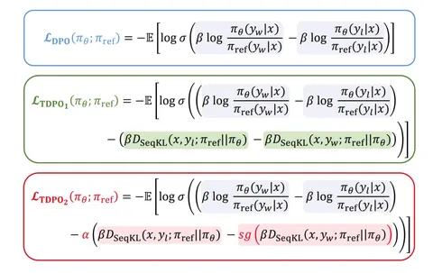

Авторы сегодняшней статьи предлагают метод потокенного Direct Preference Optimization (DPO), который на бумаге должен исправить некоторые проблемы оффлайн-обучения с подкреплением. Но на деле все оказывается не так просто.
DPO — метод обучения, не полагающийся на reward-модель. Здесь применяют датасет с размеченными парами запросов и ответов, чтобы натренировать генератор на контрастный лосс.
Проблема в том, что в случае с DPO мы работаем с вероятностями последовательностей целиком. Метод ограниченно контролирует поведение модели на уровне отдельных токенов. Это приводит к тому, что модель может ошибочно сильно повышать или понижать вероятность отдельных токенов значительно после совершенных ошибок.
Эту проблему можно нивелировать, если сделать DPO потокенным. Авторы статьи пытаются добиться этого.
Для начала они предлагают ввести необычное ограничение — сделать так, чтобы сумма наград всех токенов-продолжений для произвольного префикса была равна 0. Это довольно сильное допущение: например, если мы решаем задачу копирования какого-то куска текста, то будем сильно штрафовать модель за любое отклонение. Как результат — награда за правильный токен окажется очень большой. В этом случае, если при выборе между длинной и короткой строкой, модель будет склоняться к длинной строке.
Такое ограничение позволило авторам в их расчётах лосса избавиться от нормировочной константы вероятностного распределения. Чтобы ее вычислить, нужно суммировать награду по всем возможным ответам, а это невозможно, поэтому от константы при расчётах избавляются. В DPO нормировочная константа одинакова для победившего и проигравшего ответов, поэтому она сокращается в лоссе, но авторы статьи сделали это несколько иначе.
Из их математической модели выводится функция, которая очень похожа на DPO. Но в отличие от DPO, авторы вычитают из неё разницу между SeqKL проигравшего и победившего ответа. Этот метод, названный Token-level Direct Preference Optimization (TDPO), обеспечил незначительное улучшение по сравнению с обычным DPO. На датасете Anthropic HH точность увеличилась всего на 0,65%.
Далее авторы предлагают умножить на дополнительный коэффициент разницу SeqKL и не пропускать градиенты для победившего варианта. Это можно трактовать так: при росте SeqKL проигравшего ответа всегда увеличивается лосс, в то время, как при росте SeqKL победившего — лосс уменьшается. Получается, что добавка к DPO, после остановки градиента для её части, по сути работает, как регуляризация.
С ней метод получил название TDPO2 и он действительно неплохо улучшает показатели. На том же Anthropic HH прирост по сравнению с DPO составил уже не 0,65%, а 7,9%.
Авторы действительно предложили лучшее решение. Но возникает вопрос: насколько здесь велик вклад выведенной математической модели. По факту, авторы сильно меняют основные моменты в этой модели, а то, что остается, очень похоже на простую потокенную регуляризацию. Но её идея не нова: часто к DPO добавляют negative log likelihood loss — например, при DPO-обучении Llama 3.1, — что тоже является вариантом потокенной регуляризации. Мы склоняемся к тому, что научный вклад этой статьи невелик, а ключевые выводы — ошибочны.
Разбор подготовил
Душный NLP
